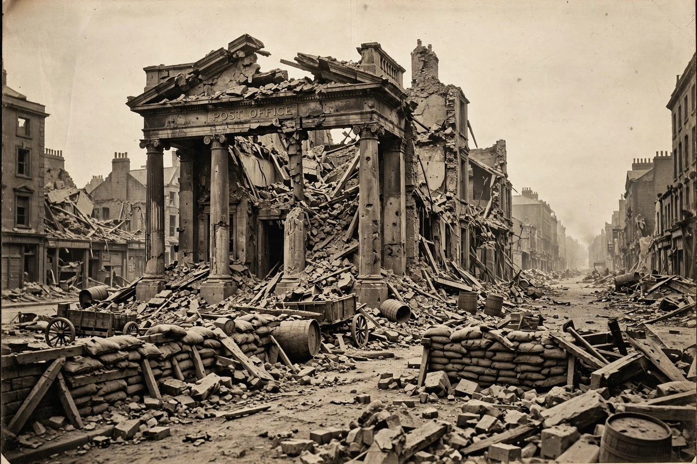

Easter Rising
| Easter Rising | |
|---|---|
 | |
| Date | 24–29 April 1916 |
| Location | Dublin; smaller actions in counties Meath, Galway, Louth and Wexford, Ireland |
| Result | Unconditional surrender of rebel forces; leaders executed |
| Belligerents | Irish Republic forces (Irish Volunteers, Irish Citizen Army, Cumann na mBan) vs. United Kingdom of Great Britain and Ireland |
| Commanders | Patrick Pearse, James Connolly, Joseph Plunkett; vs. Gen. Sir John Maxwell |
| Casualties | c. 485 killed in total (civilians the largest group); over 2,600 wounded |
The Easter Rising (Irish: Éirí Amach na Cásca), also known as the Easter Rebellion, was an armed insurrection in Ireland during Easter Week in April 1916. Launched by Irish republicans against British rule during the First World War, it aimed to establish an independent Irish Republic. Members of the Irish Volunteers and the socialist Irish Citizen Army seized key buildings across Dublin and proclaimed the Irish Republic from the steps of the General Post Office on Sackville Street. After six days of fighting against overwhelming British reinforcements, the rebels surrendered.
Background
The secret Military Council of the Irish Republican Brotherhood planned the rising, hoping for German support and exploiting Britain's preoccupation with the Great War. A shipment of German rifles was intercepted and Roger Casement arrested on the eve of the rising, while a countermanding order by Volunteer chief Eoin MacNeill — who had been deceived about the plan — threw mobilisation into chaos and sharply reduced turnout. The leaders, including schoolteacher-poet Patrick Pearse and the injured socialist James Connolly, decided to proceed on Easter Monday with about 1,200–1,600 insurgents in Dublin.
The fighting
Rebel garrisons occupied the GPO (the headquarters under Pearse and Connolly), the Four Courts, Jacob's biscuit factory, Boland's Mill, the South Dublin Union, St Stephen's Green (later the Royal College of Surgeons), and Trinity College remained in loyalist hands. British troops, rapidly reinforced to some 16,000 men with artillery, shelled the city centre from the gunboat Helga and land batteries; fires gutted O'Connell Street. The fiercest action came at Mount Street Bridge, where a handful of Volunteers inflicted heavy casualties on Sherwood Foresters regiments. On Saturday 29 April, from a fishmonger's shop on Moore Street, Pearse ordered unconditional surrender "to prevent the further slaughter of Dublin citizens".
Aftermath and legacy
About 3,500 people were arrested and 1,800 interned in Britain. Ninety death sentences were passed by courts-martial; fifteen men, including all seven signatories of the Proclamation — among them the wounded Connolly, shot strapped to a chair — were executed in Kilmainham Gaol between 3 and 12 May, and Casement was hanged in August. The executions, martial law and mass arrests transformed Irish public opinion: a rising that had initially been unpopular became sanctified as a "blood sacrifice", Sinn Féin swept the 1918 election, and the First Dáil and the Irish War of Independence followed. The Rising is commemorated as the founding act of the modern Irish state, most prominently at its centenary in 2016.